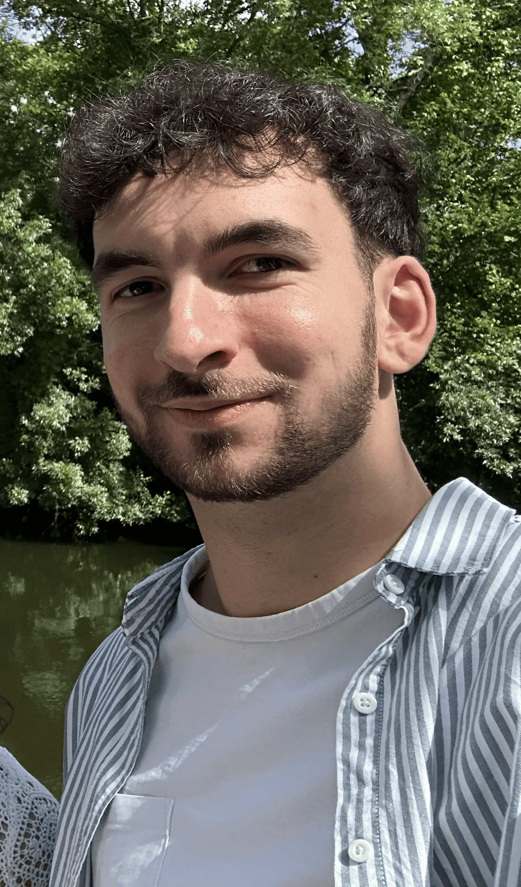
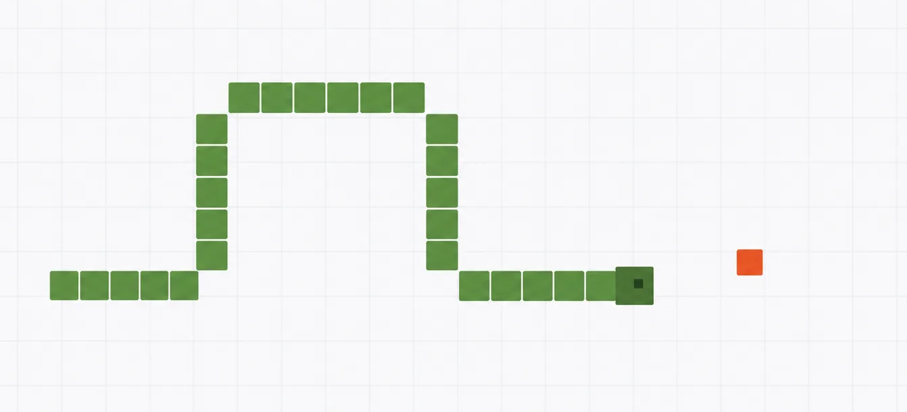
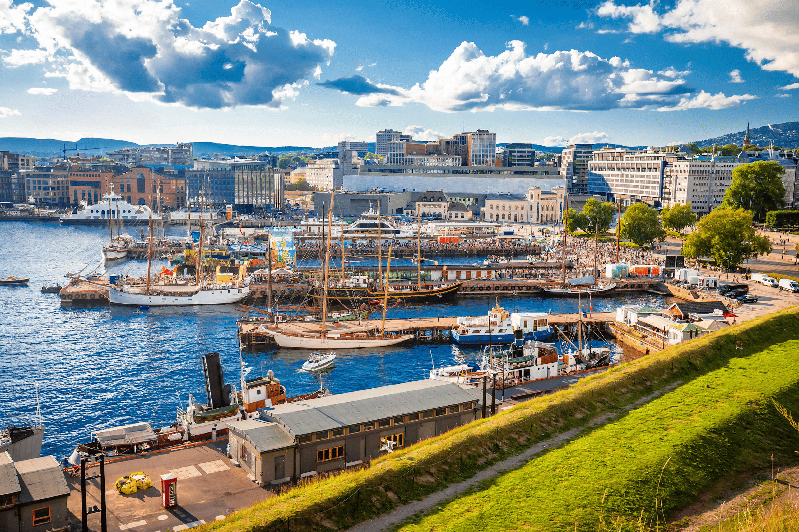
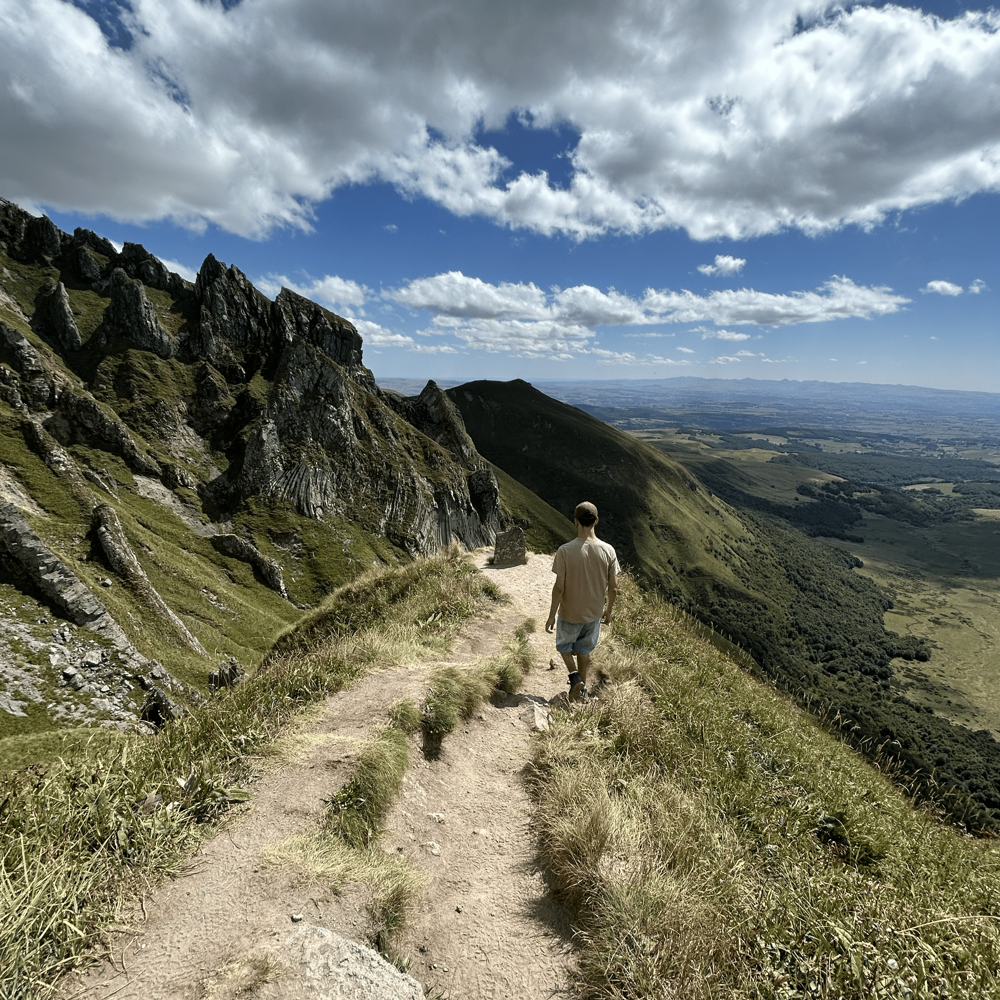
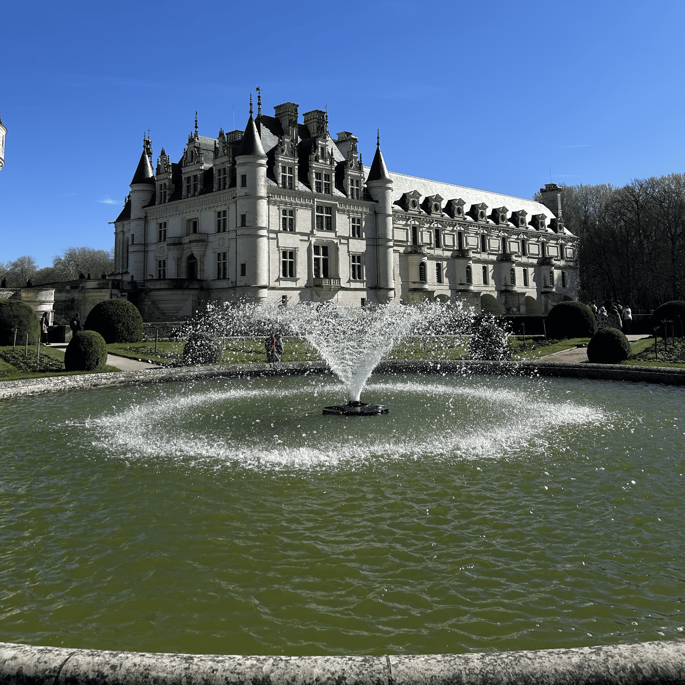
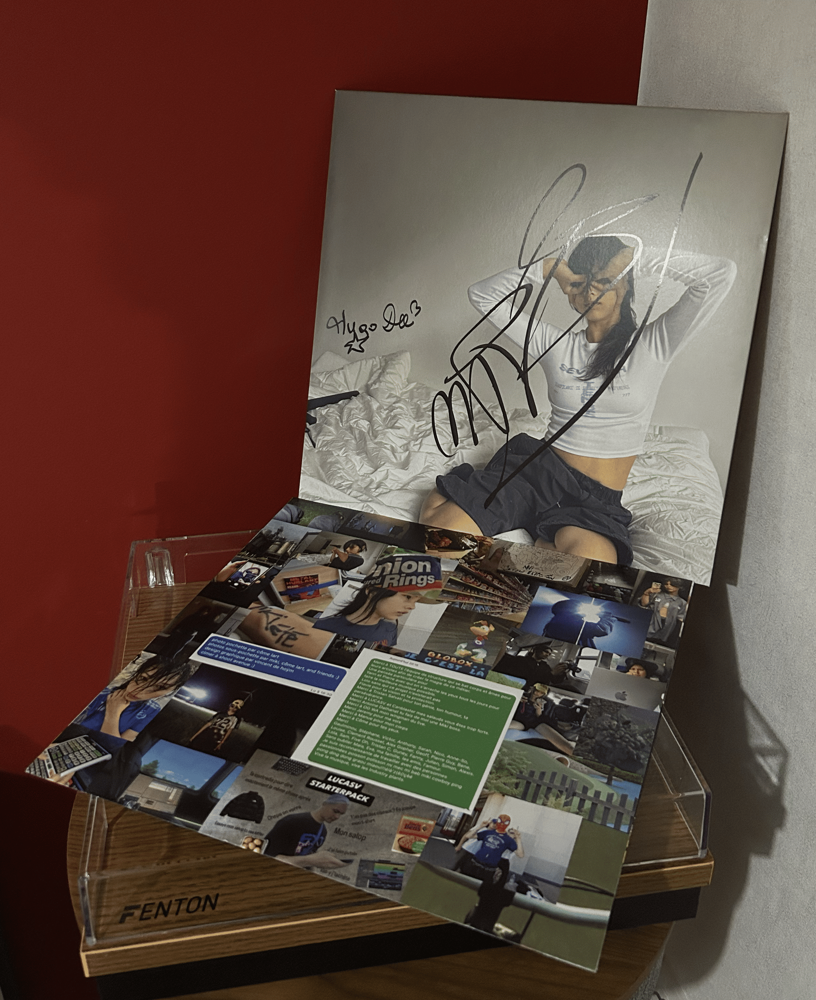
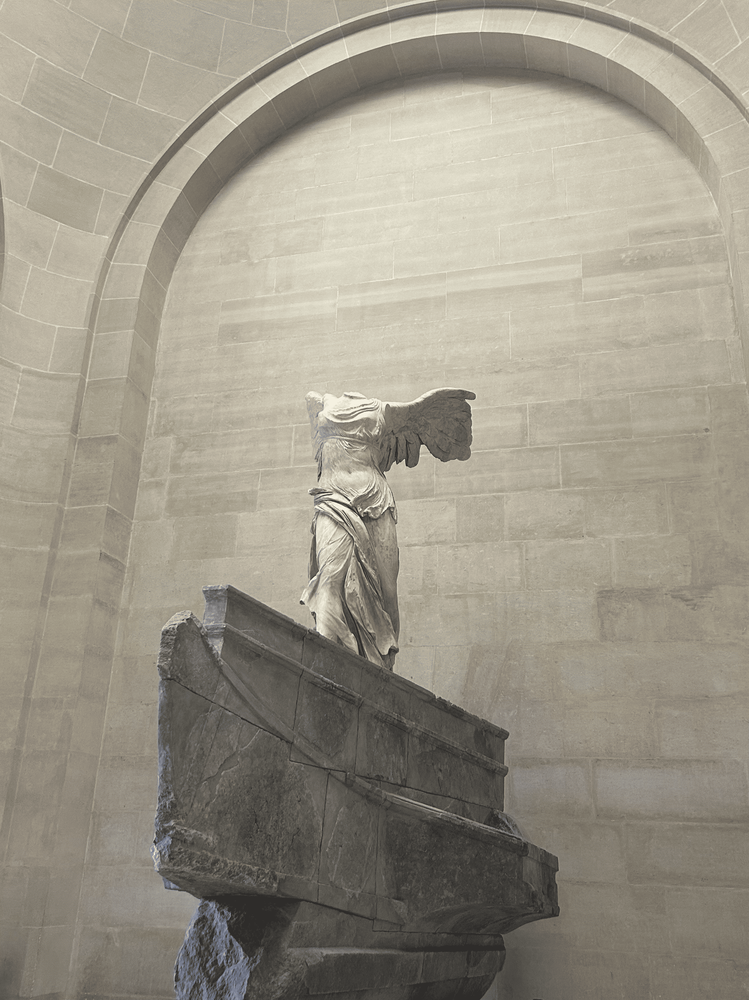
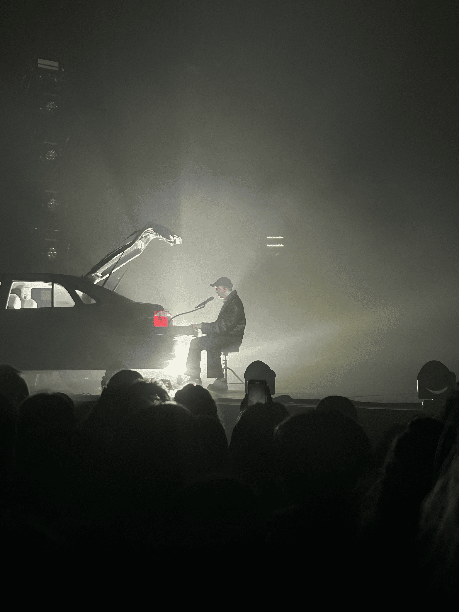

Alexis Le Masle
Bienvenue sur mon e-portfolio !
Actuellement étudiant à l'ENSEEIHT Toulouse, au sein du département Électronique, Énergie Électrique et Automatique (3EA), je vous invite à découvrir mon parcours, mes compétences et mes projets.
Particulièrement attiré par le secteur de l'électronique, je me définis comme un profil curieux et touche-à-tout, toujours enthousiaste à l'idée d'explorer de nouveaux domaines techniques et de relever des défis stimulants.
Welcome to my e-portfolio!
Currently an engineering student at ENSEEIHT Toulouse in the Electronics, Electrical Energy, and Automation (3EA) department, I invite you to discover my background, skills, and projects.
Particularly drawn to the electronics sector, I consider myself a curious and versatile individual, always enthusiastic about exploring new technical fields and taking on stimulating challenges.

Cours et projets d'ingénierieEngineering courses and projects
Projet SNAKESNAKE Project
Création d'un jeu de SNAKE en langage CCreation of a SNAKE game in C language
Ce projet se déroule en binôme pour développer le travail d'équipe. Il nous permet de mettre en applications la méthode de raffinage vue en cours dans le but de coder efficacement un projet de programmation dense. Les objectifs sont aussi de manipuler le langage C ainsi que d'apprendre à bien structurer un code par l'utilisation de sous-fonctions indépendantes pour faire un projet lisible par tous ses acteurs. This project was carried out in pairs to develop teamwork skills. It allowed us to apply the refinement method learned in class to efficiently code a dense programming project. The goals were also to practice C programming and learn how to properly structure code using independent sub-functions, making the project readable for all involved.

Mobilité internationaleInternational mobility

Norvège, Suède ou FinlandeNorway, Sweden or Finland
Ces pays sont reconnus comme étant les plus en avance dans le développement durable. Je souhaiterais donc réaliser un semestre dans l'un de ces pays pour découvrir la différence de mode de vie et ce qui fait leur avancement dans ce domaine qui me tient à cœur. These countries are recognized as pioneers in sustainable development. I would like to spend a semester in one of them to discover their different way of life and what drives their progress in this field that is close to my heart.
Royaume-UniUnited Kingdom
Mon objectif serait d'améliorer mon anglais. Travailler et étudier dans un pays anglophone me permettrait d'acquérir une véritable aisance à l'oral, essentielle pour un ingénieur, tout en m'immergeant dans une nouvelle culture. My goal would be to improve my English. Working and studying in an English-speaking country would allow me to gain true oral fluency, essential for an engineer, while immersing myself in a new culture.
ChineChina
La Chine est à la pointe de la technologie en matière d'électronique, c'est pourquoi mon but serait d'étudier la conception de systèmes embarqués. Aussi je souhaiterais découvrir une culture totalement différente de la culture européenne. China is at the forefront of electronics technology, which is why my goal would be to study embedded systems design there. I would also love to discover a culture completely different from the European one.
Développement durable et engagement civiqueSustainability and civic engagement
Clean Walk
Lors de l'intégration, j'ai pu participer à la clean walk de l'école. Cette action permet de créer un esprit d'équipe dans la promotion tout en participant à un évènement qui profite à toute la ville, la rendant ainsi plus propre. During integration, I participated in the school's clean walk. This action helps build team spirit within the cohort while contributing to an event that benefits the whole city, making it cleaner.
Grande collecte alimentaireMajor food collection
Avec l'association humanitaire de l'école, j'ai pu participer à la grande collecte alimentaire dans un supermarché de Toulouse, m'impliquant ainsi dans une démarche de solidarité directe. With the school's humanitarian association, I participated in the major food collection at a supermarket in Toulouse, engaging in a direct solidarity initiative.
Sport et autres activitésSport and other activities
Sport
J'ai pratiqué la danse hip-hop et breakdance en club pendant 5 ans, maintenant je continue de danser de mon côté ou via l'école. J'apprécie aussi randonner, j'ai pu participer à une randonnée organisée par l'association de l'école. I practiced hip-hop and breakdance in a club for 5 years, and now I continue to dance on my own or through the school. I also enjoy hiking and have participated in a hike organized by the school's association.
Hobbies
- CinémaCinema
- Écouter de la musique et aller en concertListening to music and attending concerts
- Visiter des muséesVisiting museums
- Électronique : apprentissage de l'ArduinoElectronics: learning Arduino





Développement professionnelCareer development
Mes 3 Role ModelsMy 3 Role Models
Cyril Deslandes
J'ai pu rencontrer Cyril lors de mon stage chez TKE Elevator. Après avoir eu un rôle d'ingénieur technique il est maintenant devenu directeur d'agence. Grâce à lui j'ai pu découvrir une évolution de carrière que je n'imaginais pas. I met Cyril during my internship at TKE Elevator. After working as a technical engineer, he has now become a branch manager. Thanks to him, I discovered a career progression I hadn't imagined.
Mathilde Thenaisie
Mathilde travaille chez ASTEK, une entreprise qui confectionne des cartes électroniques pour différents secteurs de l'industrie comme l'aéronautique. Grâce à elle, j'ai pu découvrir plus concrètement un des métiers d'un ingénieur en conception de cartes électroniques. Mathilde works at ASTEK, a company that makes electronic boards for various industries like aeronautics. Thanks to her, I got a practical look into the job of an electronics board design engineer.
Laurent Deroin
J'ai rencontré Laurent lors du festival Futur Proche (conférence sur la lowtech). Me questionnant sur l'impact environnemental de mon futur métier, nous avons discuté de son choix de quitter l'industrie pour le CNRS. Selon lui, il est tout à fait possible de donner du sens à son travail, même dans un secteur à fort impact, en œuvrant à y intégrer le développement durable. I met Laurent at the Futur Proche festival (a conference on low-tech). Wondering about the environmental impact of my future job, we discussed his choice to leave the industry for the CNRS. According to him, it is quite possible to find meaning in your work, even in a high-impact sector, by striving to integrate sustainable development.
La suite de mon parcoursMy Next Steps
Je souhaite m'orienter vers la conception de systèmes embarqués ou dans l'IoT car j'aime créer des objets par moi-même (d'où mon intérêt pour l'électronique et l'Arduino). Mais je me laisse aussi l'opportunité de découvrir de nouveaux domaines comme les télécommunications et autres domaines présentés à l'N7. I wish to focus on embedded systems design or IoT because I love creating objects myself (hence my interest in electronics and Arduino). However, I am also open to discovering new fields like telecommunications and others presented at N7.